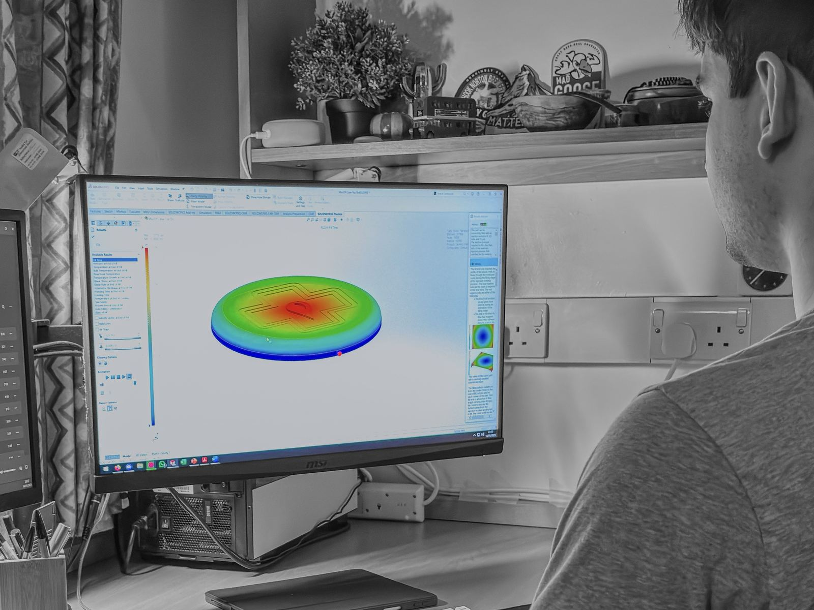
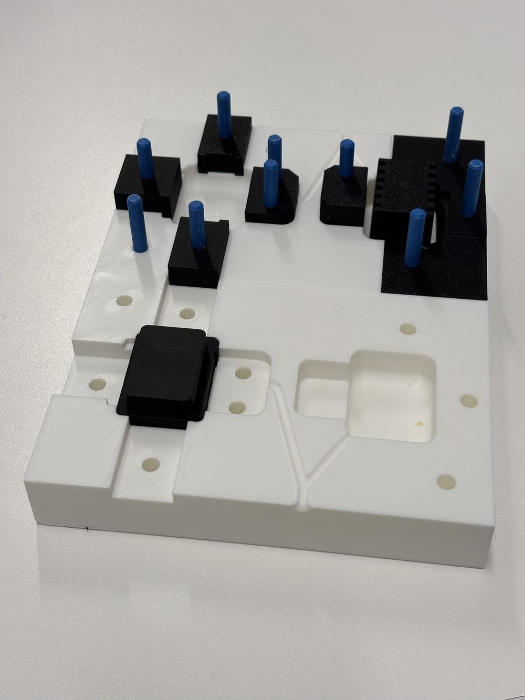
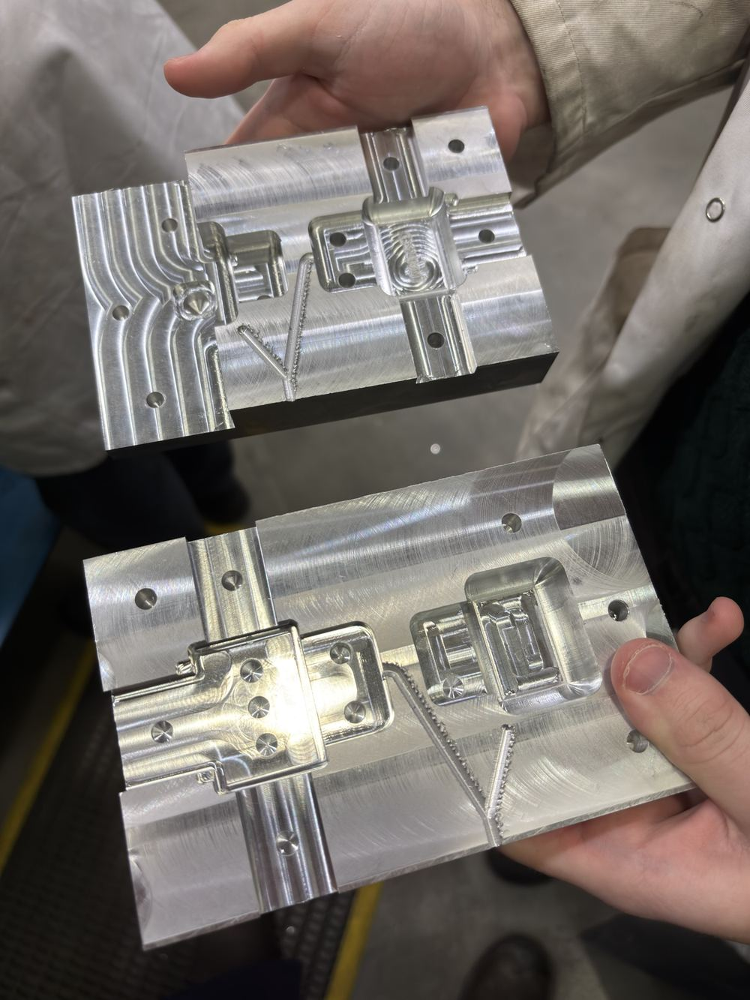
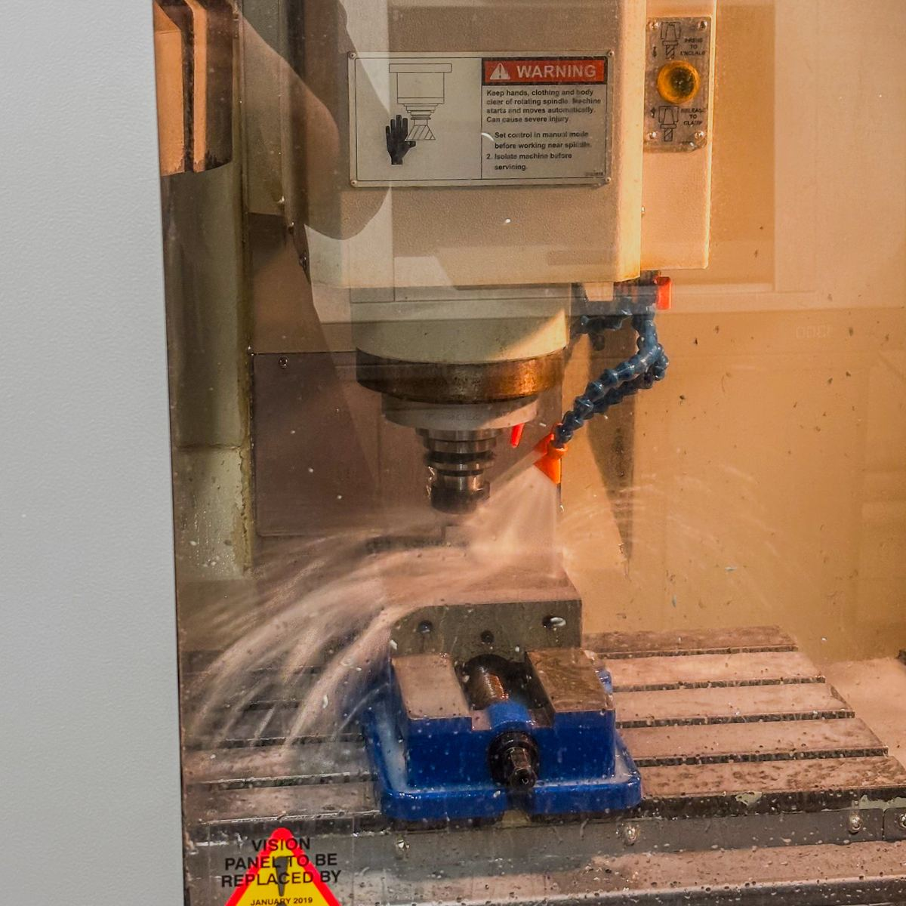
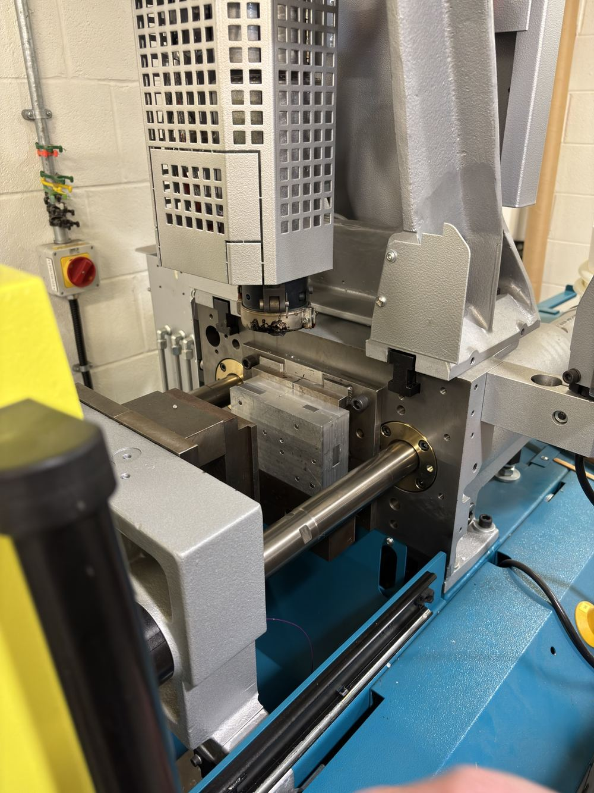

Injection mould tool
Taking an injection mould tool from flow simulation to 3D printed prototype to CNC machined aluminium. I wrote the CNC toolpaths and cut machining time from two hours per block to 20 minutes.
- Type
- University group project
- My focus
- CNC toolpaths, flow simulation
- Processes
- CNC milling, turning, 3D printing
- Software
- SolidWorks Plastics

Overview
A university project to design, make and run a working injection mould tool. It was hands-on from start to finish, with lots of time on CNC mills and lathes, and one of the most enjoyable projects I've worked on.
Simulate first
The project started individually. I modelled my own part and ran a mould-flow simulation in SolidWorks Plastics. The fill-time plot shows where plastic reaches first (red) and last (blue), which helps decide where to put the gate and spot filling problems before any metal is cut.
Prototype the tool
In the group stage we 3D printed the whole tool before machining it, to check that every part fitted together. Colour coding made the assembly easy to read: white for the block halves, black for the inserts and blue for the locator pins.


Machining
I wrote the CNC toolpaths for the aluminium blocks and brought machining time down from two hours per block to 20 minutes, a result our lecturer was very impressed by.

